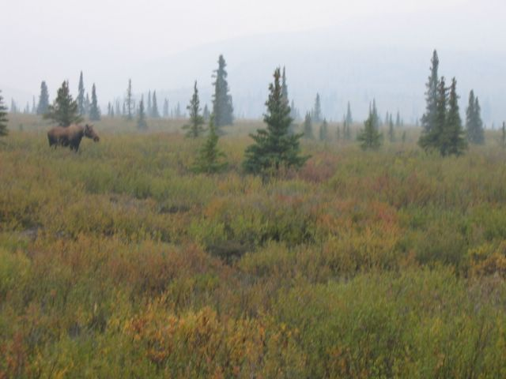

First |
Previous Picture |
Next Picture |
Last |
------------------------------ |
PICTURES HOME |
BORIS HOME

Los indios Athabascan sobrevivieron usando al moose
como comida. Hay entre 120,000 y 160,000
animales.
picture_113.jpgtest